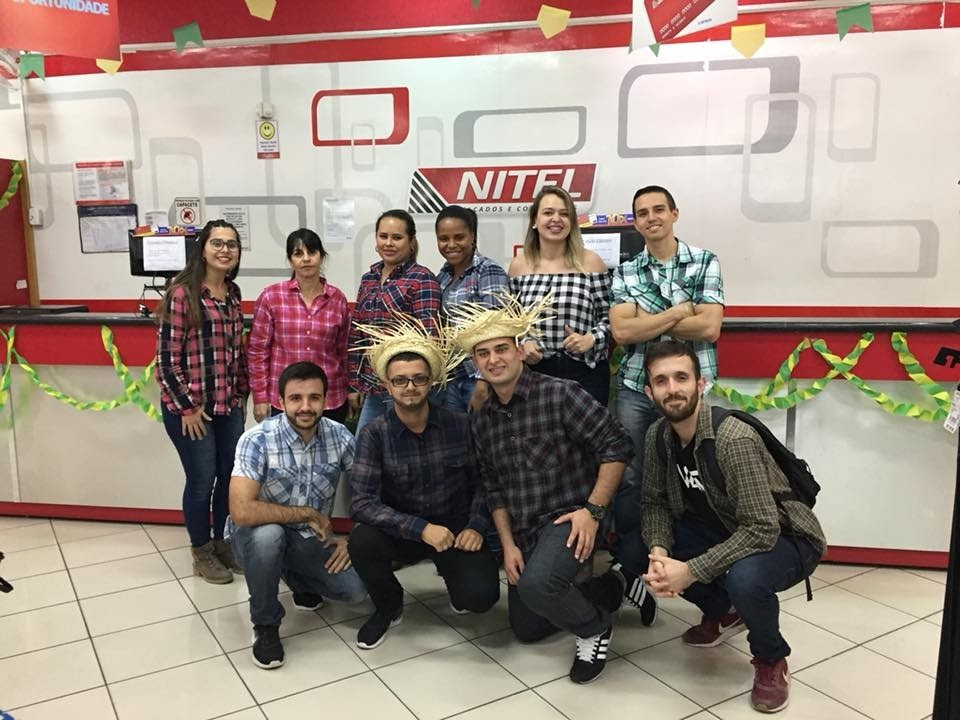

Nitel Calçados

Neste projeto, você pode registrar alguns hábitos que foram
disponibilizados de forma a serem os mais comuns no dia a dia, eles
são: atividade fisica, hidratação, alimentação, estudos e
remédios.Neste projeto foi utilizado as seguintes tecnologias: html,
css e javascript.